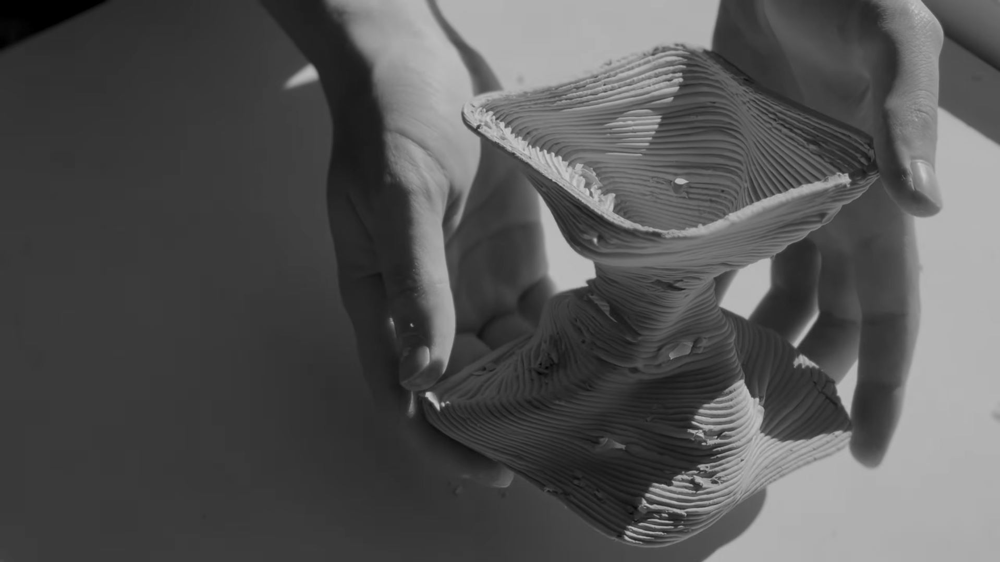
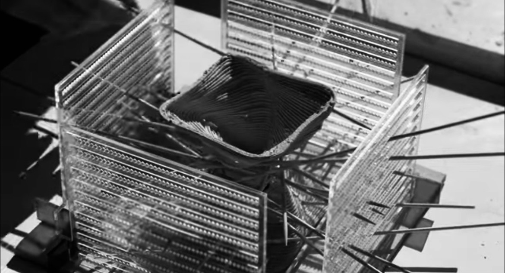
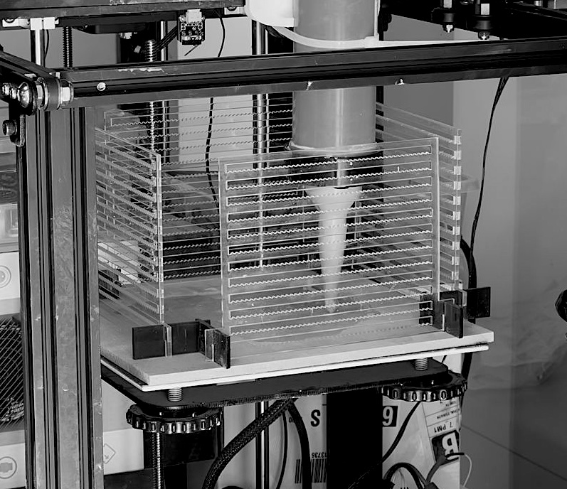

01 / PROYECTO
Urdimbre
2026
Sistema de apoyo para la impresión 3D en arcilla que busca acompañar el proceso de construcción de formas. Mediante una base de madera y muros de acrílico transparente cortados con láser, se incorporan varillas de madera de manera manual durante la extrusión para sostener zonas inestables. El proyecto considera un kit de componentes, manual de uso y packaging.
Procesos: Grasshopper · Corte láser · Impresión 3D en arcilla · AutoCAD · InDesign · Illustrator
Docentes: Leonardo Aravena y Renée Rodo
Colaboradores: Alonso Hernández y Matías Arce
Docentes: Leonardo Aravena y Renée Rodo
Colaboradores: Alonso Hernández y Matías Arce